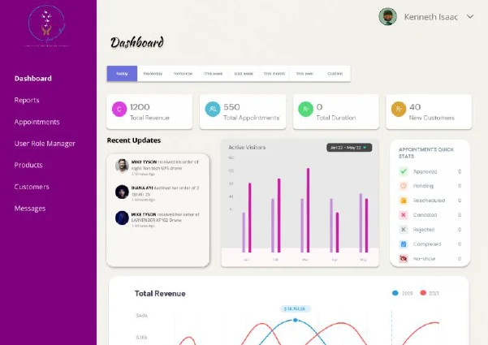
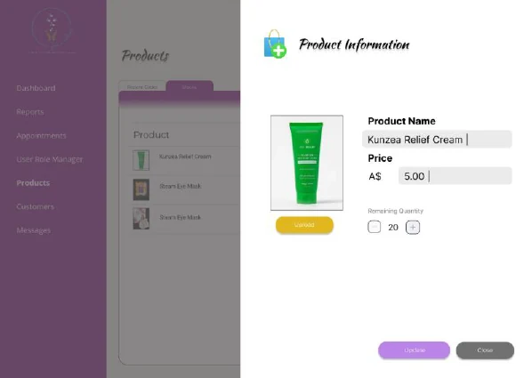
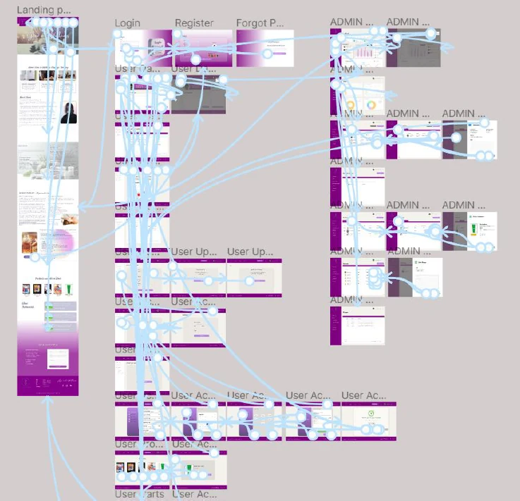
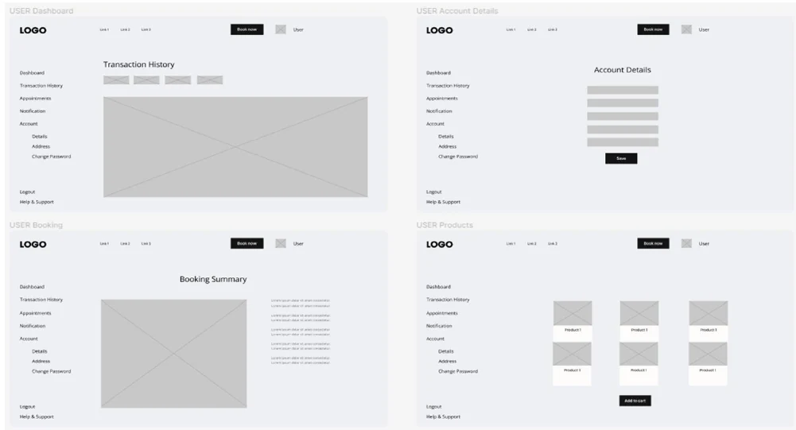
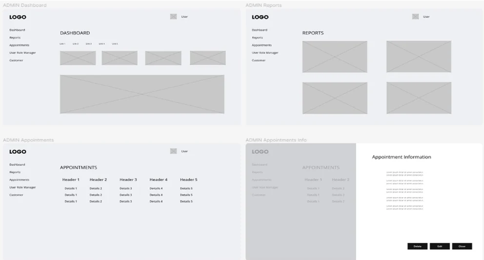

Screen hierarchy
Content organised around clear user priorities and actions.
Responsive screen concepts focused on hierarchy, reusable components and clear user flows.
These Figma samples communicate navigation, content structure and interaction intent before development. The work includes dashboards, product flows and responsive wireframes.
Content organised around clear user priorities and actions.
Consistent components designed to support scalable interfaces.
Connected screens show how users move through key tasks.





Browse the other work categories or review the résumé for professional experience, education and credentials.